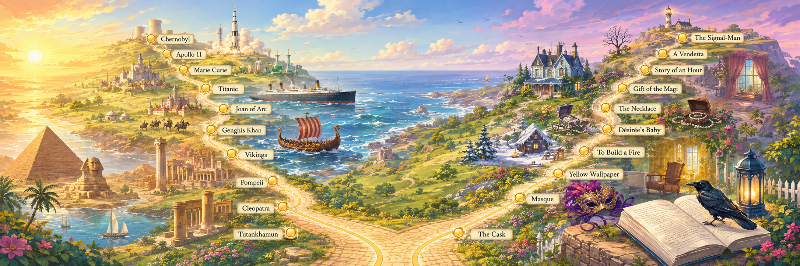

A hundred and thirty of history's most dramatic true stories — retold for English learners, at two levels, with the real podcast as your homework.
Real history makes the best language lessons: a gripping story to read, rich vocabulary to learn, and endless things to argue about. Each lesson here takes one extraordinary true story — a sinking ship, a queen's downfall, a city buried in a day — and turns it into a complete speaking lesson.
Most stories come at two levels (B2/C1 and a simpler A2/B1 twin), the newest are B2/C1 only, and every one teaches one grammar focus — the hundred and thirty-one are sorted below by what they feel like — and every card still shows its grammar focus. The lessons stand completely on their own; the brilliant "Short History Of…" podcast sits at the end of each as optional listening — listen before for a head start, or after to stretch your ears.
Jump to a theme
When did it happen?
Grammar focus
Not sure where to start? Follow a path
Five true crime stories, from a hijacker in the sky to an island prison nobody escaped from.
Warriors, nurses, reporters and campaigners — read them in this order and the century changes around you.
No bodies, no answers, a lot of theories. Decide for yourself.
Ice, mountains and a frozen Alaska — stories about what people can endure.
Disasters in order of time, from a buried city to a broken reactor.
Five rulers and their empires, from Alexander to the last Tsar.
Ships with nobody aboard, a pilot who never landed, a hijacker who jumped into the night.
Crowns, courts and the people who lost their heads — or very nearly kept them.
Pirates, gangsters and conspirators — and the prisons built to hold them.
A city buried in a day, a ship that could not sink, a reactor that would not stop.
Explorers, athletes and dreamers who went further than anyone thought possible.
Temples in the jungle, a city cut into rock, an army of clay.
Generals, raiders and sieges — and one truce in the middle of the mud.
People who refused to accept the world as it was.
Where the money went — and who was left holding the bill.
Painters, inventors and scientists, and the ideas that would not stay quiet.
Nothing matches — try fewer filters.
Learn the words you'll need — before you read.
The true story, read in parts, with checks and discussion.
One structure the story teaches, with practice.
The real podcast — optional, for before or after.
Retell it, discuss it, make the language your own.